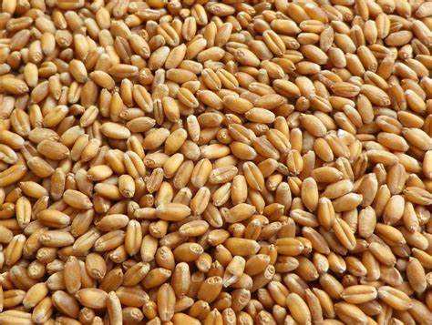
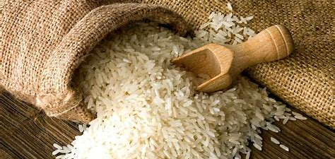
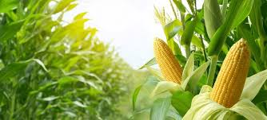

Wheat
A staple cereal crop.

rice
A key food staple globally.

Corn
Versatile and widely used.
Growing Conditions:
Cultivation Practices:
Harvesting Information:
Market Price Trends:
Pest and Disease Management:
Contract Farming Details:
Success Stories:
Close